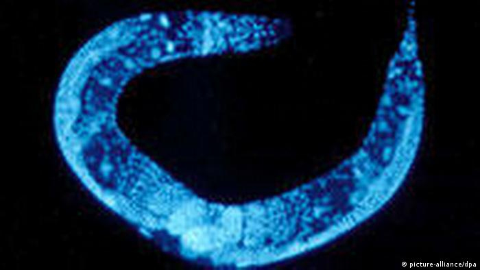

Estudio: la “limpieza” de células sería la clave para gozar de salud plena por más tiempo pese al envejecimiento
Contents
Estudio: la “limpieza” de células sería la clave para gozar de salud plena por más tiempo pese al envejecimiento¶
Un proceso natural denominado autofagia se encarga de depurar las células y mantenerlas sanas. Un grupo de científicos investigan cómo potenciarlo para frenar las enfermedades de la vejez.
Actualmente, la humanidad pasa años, incluso décadas, en la vejez viviendo con enfermedades físicas o mentales causadas casi exclusivamente por el proceso de envejecimiento. En muchos de estos casos, se carecen de tratamientos para las enfermedades de la senectud.
Casi 150 años después, los trastornos asociados a la edad, como el alzhéimer o las enfermedades cardíacas, han alcanzado niveles epidémicos en el Norte del mundo, y la búsqueda del rejuvenecimiento conserva todo su atractivo.
“Nuestro objetivo tiene que dejar de ser vivir más tiempo y pasar a lograr una mayor calidad de vida en la vejez”, afirma el investigador, que además es coordinador principal del proyecto Macroautofagia y Neurodegeneración Necrótica en la Vejez (MANNA, por sus siglas en inglés), financiado por la Unión Europea.
Autofagia: desintoxicación celular De acuerdo con Nektario Tavernarakis, biocientífico y profesor de la Universidad de Creta, en Grecia, que estudia el envejecimiento, la muerte celular y la neurodegeneración, su objetivo es entender y, finalmente remediar, las causas celulares del deterioro biológico.
Desde los distintos tipos de cáncer, hasta las enfermedades que atacan a los órganos internos y el sistema circulatorio, hay todo un cúmulo de padecimientos y dolencias asociadas al envejecimiento. La pregunta es cómo resolver dicho deterioro biológico.
Al respecto, la autofagia, un proceso biológico que en griego significa “comerse a sí mismo”, carga con muchas esperanzas en torno a estas inquietudes. Es simple: las células utilizan la autofagia para librarse del material tóxico.
A medida que envejecemos, esta tarea básica de limpieza se realiza con menos eficacia, lo cual provoca la acumulación de errores y defectos de funcionamiento que desencadenan la inflamación que causa la enfermedad, y al final, la muerte celular necrótica, o necrosis.
Es decir, las pruebas apuntan a que la autofagia defectuosa es el denominador común de muchos trastornos relacionados a la vejez. Así, es la necrosis la que da pie a tumores, enfermedades hepáticas, derrames cerebrales y otros transtornos relacionados con la edad como el alzhéimer y el párkinson.
La investigación: por el desarrollo de una píldora “geroprotectora”¶
Pese a que la investigación en este campo está en sus comienzos, estudios indican que potenciar la autofagia puede alegar la supervivencia de las células, o sea, mejorar las chances de gozar de buena salud.
Mirando al futuro, Linda Partridge, directora fundadora del Instituto Max Planck de Biología del Envejecimiento de Alemania, afirma: “Vemos la posibilidad de desarrollar una sola pastilla que apunte a las vías biológicas que también influyen en la autofagia. La idea sería disponer de una polipíldora que atajara los mecanismos subyacentes que intervienen en más de una enfermedad relacionada con el envejecimiento”.
En pocas palabras, de poder atacar los procesos de envejecimiento, será posible retardar la degeneración relacionada con la edad y mantener a las personas más sanas por más tiempo. De esta forma sería posible tratar las enfermedades a un ritmo distinto, es decir, a medida que van a apareciendo.
A su vez, Patridge es la principal investigadora de GeroProtect, un proyecto financiado por la Unión Europea cuyo objetivo es encontrar un fármaco adecuado para esa píldora “geroprotectora”.

Para desentrañar la conexión entre la autofagia y la degeneración del sistema nervioso asociada a la edad. El proyecto MANNA de Nektarios Tavernakis se enfoca en gran medida en investigar al gusano Caenorhabditis elegans, el cual, sorprendentemente, tiene un sistema nervioso muy similar al de los seres humanos.
La mitofagia¶
En cuatro años de investigación, el equipo ha descubierto que la supervivencia y la conservación a largo plazo de las neuronas depende de un subtipo de autofagia denominada mitofagia. Es por medio de la mitofagia que el organismo limpia las células cuando está en su plenitud.
Con la edad, la mitofagia se ralentiza, dando paso a acumulaciones tóxicas en las células, que eventualmente produce inflamaciones hasta desembocar en deterioro celular y la muerte. Esta pérdida progresiva de células nerviosas funcionales es lo que causa la aparición de enfermedades neurodegenerativas.
“Nuestro trabajo sobre el C. elegans y el tejido cerebral humano nos permite confirmar que la mitofagia está infrarregulada en los pacientes de alzhéimer”, explica Tavernakis. Añade que siguen los esfuerzos por descifrar aquello que incluye en el mal funcionamiento de la mitofagia, y confía en que al final tendremos terapias génicas complejas para sustituir las secuencias genéticas que aceleran la necrosis por otra que potencien una autofagia saludable hasta bien entrada la vejez.